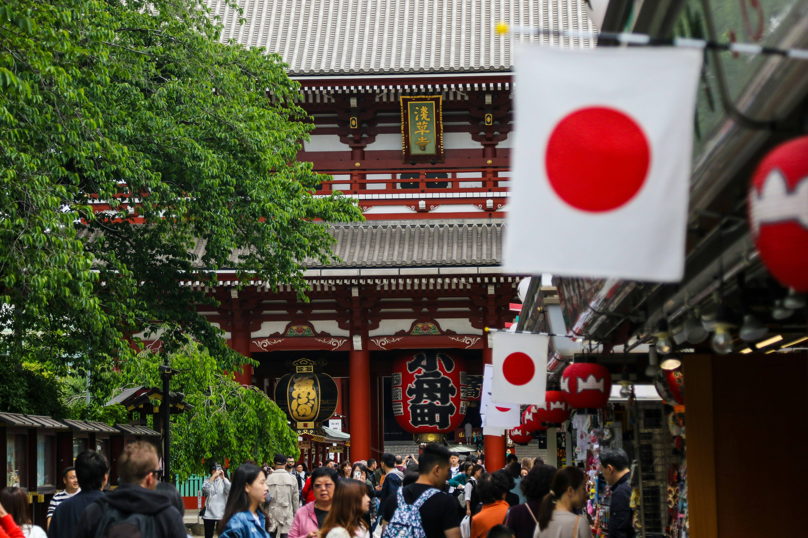
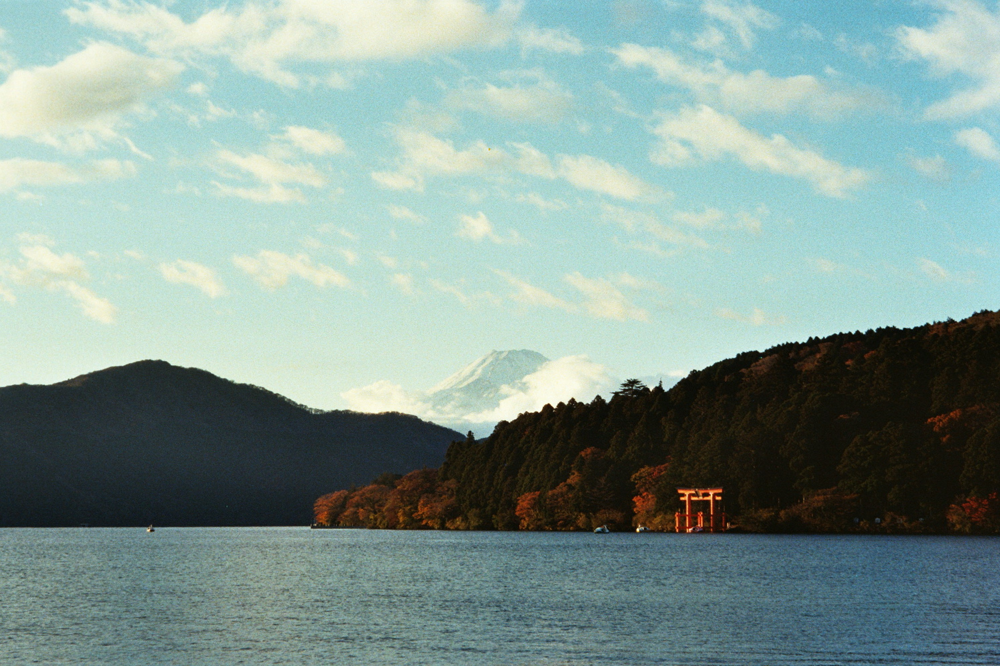
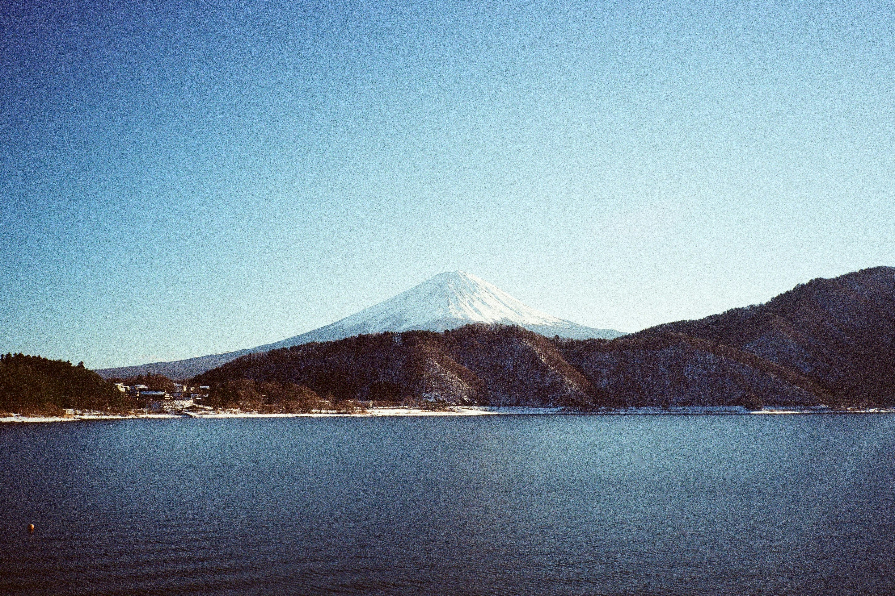
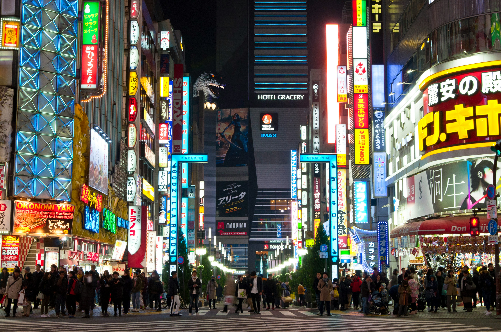

旅遊掠影
這次旅程的精彩瞬間與必訪景點的驚鴻一瞥。






東京探索領航工具包
交通網絡攻略
- N'EX / Skyliner: 從成田機場快速進入市區。
- JR 山手線: 環繞東京市中心，連接主要樞紐。
- 東京 Metro: 路線密集，深入城市各個角落。
必備IC卡
- Suica / Pasmo: 交通、便利商店、販賣機皆可用。
- 手機綁定: 可將卡片加入 Apple Pay 或 Google Pay。
- 遊客版卡: Welcome Suica 等，短期免押金。
神社參拜禮儀
- 鳥居: 進入前先輕輕一鞠躬。
- 手水舍: 洗手漱口，淨化身心。
- 參拜: 二拜、二拍手、一拜。